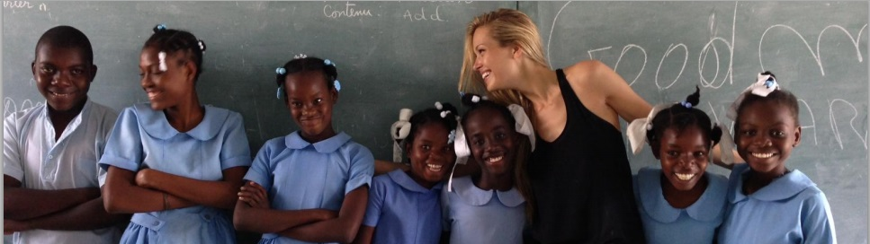

Our Mission
Happy Hearts Fund, founded in 2006 by Petra Nemcova after she survived the 2004 Indian Ocean Tsunami, rebuilds safe-resilient schools in areas impacted by natural disasters We work during the gap period when children are forgotten after emergency response is complete.
Story of Change
A student from 16 De Septiembre School in Veracruz, Mexico I am 11 years old and I studied at a very poor school with very small rooms. Now, thanks to Happy Hearts I have a large school in which we are all delighted. The school is very nice and everyone can study at ease.
Rebuilding after the spotlight
Happy Hearts Fund rebuilds safe-resilient schools in areas impacted by natural disasters. We work during the gap period when children are forgotten after emergency response is complete.